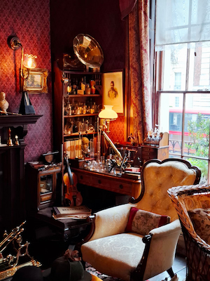
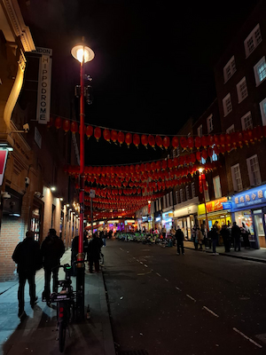
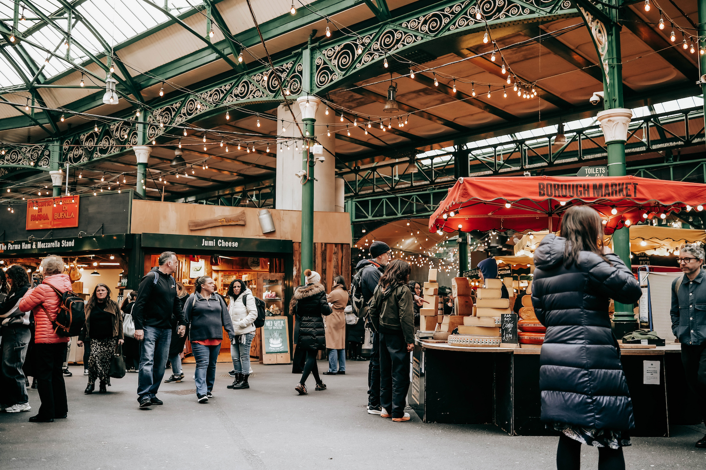
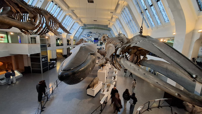
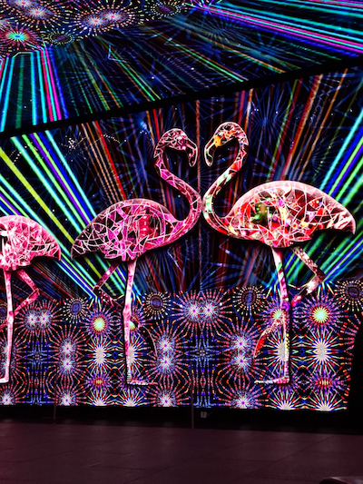

Recommended Places
Sherlock Holmes Museum
The Sherlock Holmes Museum is not only a must-see for all Sherlock Holmes fans, but also for anyone interested in London's literary past. Because that's exactly where this museum takes us – into the past. The museum displays the apartment of Mr. Sherlock Holmes and Dr. John Watson, which is furnished in Victorian style. Furthermore, the books were used to create a detailed replica of the apartment. This gives every visitor to the museum a special feeling, as if they were part of the legendary stories of the famous detective.


Chinatown
Chinatown is a highly recommended place. Its atmosphere makes it unique in London. Everywhere you look there are brightly lit signs, the classic red lanterns, and many restaurants serving Chinese cuisine. Here you can feel how several cultures meet. Here you can feel how many different cultures meet and live together without conflicts arising.
Borough Market
Borough Market, one of London's oldest and most famous food markets. Here, too, the city's diversity is clearly evident. A wide variety of international specialties, street food and Spices await you. The vendors usually offer samples, allowing you to experience a culinary world tour without spending much. The surrounding of Borough Market is just as international, so you often see street musicians or street performers from all over the world.

Natural History Museum
Here, impressive architecture meets astonishing history. This museum is impressive simply by its appearance. For free entry you can discover a lot about the history, nature and wildlife of the Earth. Everything is included, from real dinosaur fossils to real skeletons of whales still living today. For anyone who wants to learn something in London and not just see the sights, this is the perfect opportunity.

Leicester Square
Leicester Square is the heart of London's entertainment scene. With its many brightly lit billboards, street performers, theatres and cinemas, it feels like a British Hollywood. Here, more than anywhere else, you can feel the constantly vibrant city life of London. This place is particularly impressive at night, as even at midnight there are as many people about as if it were daytime.

Do's and Dont's
DO'S
- Be respectful and use the words "please" and "thank you" a little more often than usual.
- When using the Tube stations escalators, remember to stand on the right and walk on the left. (Click to see)
- In restaurants, a 10%-15% tip is customary, so use that as a guideline if you plan to eat there again.
DONT'S
- If you're waiting in a queue, don't push in line – Londoners consider that very rude.
- You should never drop your trash on the street; it belongs in the trash can.
- Don't force small talk. They value their privacy.
What surprised us about London
We were surprised by the size of London. Sightseeing on foot has proven to be very strenuous, so you should definitely use public transport as otherwise you would sometimes spend hours walking from one place to the next. Either way, you should make sure to wear comfortable footwear, as you will be doing more than enough walking even when using public transport.
What also surprised us a lot was the very open and accepting way people treated immigrants in particular. As we knew, this is due to the British past and the fact that London is simply a major city, and acceptance of diversity is usually higher in such cities than elsewhere. But it still feels different than in German cities like Berlin or Leipzig. We believe that, primarily due to Britain's critical history of slavery, a special kind of acceptance has now arisen in the present, which this city or this country in general, makes so special.